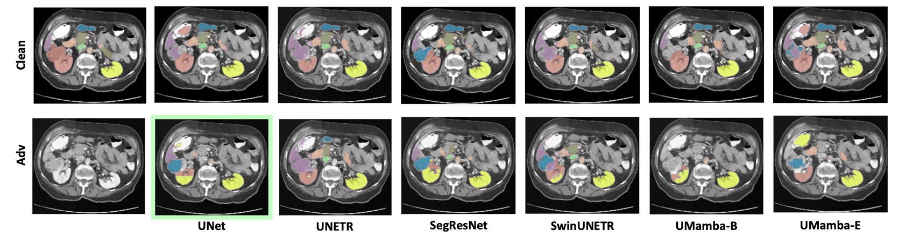
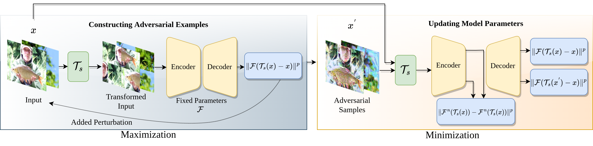

Publications
Towards Evaluating the Robustness of Visual State Space Models (Under Review)
Hashmat Shadab Malik, Fahad Shamshad, Muzammal Naseer, Karthik Nandakumar, Fahad Shahbaz Khan, Karthik Nandakumar
In this work, we present a comprehensive evaluation of VSSMs' robustness under various perturbation scenarios, including occlusions, image structure, common corruptions, and adversarial attacks, and compare their performance to well-established architectures such as transformers and Convolutional Neural Networks. Furthermore, we investigate the resilience of VSSMs to object-background compositional changes on sophisticated benchmarks designed to test model performance in complex visual scenes. We also assess their robustness on object detection and segmentation tasks using corrupted datasets that mimic real-world scenarios. To gain a deeper understanding of VSSMs' adversarial robustness, we conduct a frequency-based analysis of adversarial attacks, evaluating their performance against low-frequency and high-frequency perturbations. Our findings highlight the strengths and limitations of VSSMs in handling complex visual corruptions, offering valuable insights for future research.
ObjectCompose: Evaluating Resilience of Vision-Based Models on Object-to-Background Compositional Changes [ACCV 2024 Oral]
Hashmat Shadab Malik*, Muhammad Huzaifa*, Muzammal Naseer, Salman Khan, Fahad Shahbaz Khan

We propose ObjectCompose, which can induce diverse object-to-background changes while preserving the original semantics and appearance of the object. To achieve this goal, we harness the generative capabilities of text-to-image, image-to-text, and image-to-segment models to automatically generate a broad spectrum of object-to-background changes. We induce both natural and adversarial background changes by either modifying the textual prompts or optimizing the latents and textual embedding of text-to-image models. We produce various versions of standard vision datasets (ImageNet, COCO), incorporating either diverse and realistic backgrounds into the images or introducing color, texture, and adversarial changes in the background. We conduct extensive experiments to analyze the robustness of vision-based models against object-to-background context variations across diverse tasks.
Evaluating Robustness of Volumetric Medical Segmentation Models [BMVC 2024]
Hashmat Shadab Malik, Numan Saeed, Asif Hanif, Muzammal Naseer, Mohammad Yaqub, Salman Khan, Fahad Shahbaz Khan
Our work aims to empirically examine the adversarial robustness across current volumetric medical segmentation architectures, encompassing Convolutional, Transformer, and Mamba-based models. We extend this investigation across four volumetric segmentation datasets, evaluating robustness under both white box and black box adversarial attacks. Overall, we observe that while both pixel and frequency-based attacks perform reasonably well under white box setting, the latter performs significantly better under transfer-based black box attacks. Across our experiments, we observe transformer-based models show higher robustness than convolution-based models with Mamba-based models being the most vulnerable. Additionally, we show that large-scale training of volumetric segmentation models improves the model's robustness against adversarial attacks.
Adversarial Pixel Restoration as a Pretext Task for Transferable Perturbations [BMVC 2022 Oral]
Hashmat Shadab Malik, Shahina K. Kunhimon, Muzammal Naseer, Salman Khan, Fahad Shahbaz Khan
Transferable adversarial attacks optimize adversaries from a pretrained surrogate model and known label space to fool the unknown black-box models. Therefore, these attacks are restricted by the availability of an effective surrogate model. In this work, we relax this assumption and propose Adversarial Pixel Restoration as a self-supervised alternative to train an effective surrogate model from scratch under the condition of no labels and few data samples. Our training approach is based on a min-max scheme which reduces overfitting via an adversarial objective and thus optimizes for a more generalizable surrogate model. Our proposed attack is complimentary to the adversarial pixel restoration and is independent of any task specific objective as it can be launched in a self-supervised manner. We successfully demonstrate the adversarial transferability of our approach to Vision Transformers as well as Convolutional Neural Networks for the tasks of classification, object detection, and video segmentation. Our training approach improves the transferability of the baseline unsupervised training method by 16.4% on ImageNet val. set.